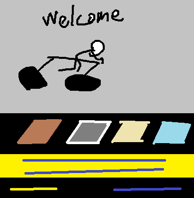
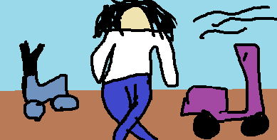

About Us
范進進學回家，母親、妻子俱各歡喜。正待燒鍋做飯，只見他丈人胡屠戶，手裡拿著一副大腸和一瓶酒，走了進來。范進向他作揖，坐下。胡屠戶道：“我自倒運，把個女兒嫁與你這現世寶，歷年以來，不知累了我多少。如今不知因我積了甚么德，帶挈你中了個相公，我所以帶個酒來賀你。”范進唯唯連聲，叫渾家把腸子煮了，燙起酒來，在茅草棚下坐著。母親自和媳婦在廚下造飯。胡屠戶又吩咐女婿道：“你如今既中了相公，凡事要立起個體統來。比如我這行事裡，都是些正經有臉面的人，又是你的長親，你怎敢在我們跟前裝大？若是家門口這些做田的，扒糞的，不過是平頭百姓，你若同他拱手作揖，平起平坐，這就是壞了學校規矩，連我臉上都無光了。你是個爛忠厚沒用的人，所以這些話我不得不教導你，免得惹人笑話。”范進道：“岳父見教的是。”胡屠戶又道：“親家母也來這裡坐著吃飯。老人家每日小菜飯，想也難過。我女孩兒也吃些。自從進了你家門，這十幾年，不知豬油可曾吃過兩三回哩！可憐！可憐！”說罷，婆媳兩個都來坐著吃了飯。吃到日西時分，胡屠戶吃的醺醺的。這裡母子兩個，千恩萬謝。屠戶橫披了衣服，腆著肚子去了。
次日，范進少不得拜拜鄉鄰。魏好古又約了一班同案的朋友，彼此來往。因是鄉試年，做了幾個文會。不覺到了六月盡間，這些同案的人約范進去鄉試。范進因沒有盤費，走去同丈人商議，被胡屠戶一口啐在臉上，罵了一個狗血噴頭，道：“不要失了你的時了！你自己只覺得中了一個相公，就‘癩蛤蟆想吃起天鵝肉’來！我聽見人說，就是中相公時，也不是你的文章，還是宗師看見你老，不過意，舍與你的。如今痴心就想中起老爺來！這些中老爺的都是天上的‘文曲星’！你不看見城裡張府上那些老爺，都有萬貫家私，一個個方面大耳？像你這尖嘴猴腮，也該撒拋尿自己照照！不三不四，就想天鵝屁吃！趁早收了這心，明年在我們行事裡替你尋一個館，每年尋幾兩銀子，養活你那老不死的老娘和你老婆是正經！你問我借盤纏，我一天殺一個豬還賺不得錢把銀子，都把與你去丟在水裡，叫我一家老小嗑西北風！”一頓夾七夾八，罵的范進摸門不著。辭了丈人回來，自心裡想：“宗師說我火候已到，自古無場外的舉人，如不進去考他一考，如何甘心？”因向幾個同案商議，瞞著丈人，到城裡鄉試。出了場，即便回家。家裡已是餓了兩三天。被胡屠戶知道，又罵了一頓。

